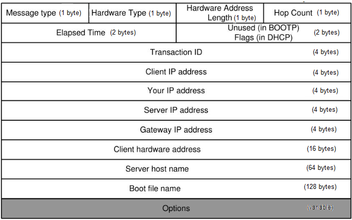
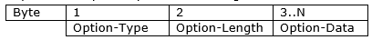
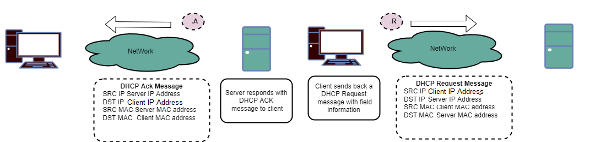
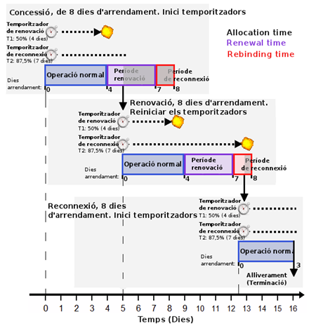
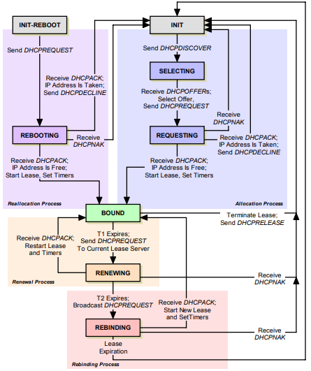
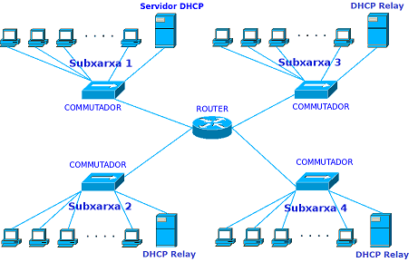

DHCP
ÍNDICE
INTRODUCCIÓN
DEFINICIÓN
El protocolo DHCP (Dynamic Host Configuration Protocol, RFC 2131), o protocolo de configuración dinámica de host, proporciona un mecanismo rápido de configuración de red mediante un modelo cliente-servidor. DHCP es una versión avanzada del protocolo BOOTP (Bootstrap Protocol, RFC 951), el cual era utilizado por los clientes de la red para obtener también una dirección IP y la información del proceso de arranque en el nodo.
El protocolo DHCP utiliza los siguientes puertos UDP (User Datagram Protocol) :
- 67 (servidor)
- 68 (cliente)
Los nodos clientes solicitan a uno o varios servidores DHCP de su red los parámetros de configuración para las interfaces de red configuradas en modo DHCP. De manera general, los servidores DHCP alquilan (lease) la configuración a los clientes durante un tiempo concesión determinado. Una vez finalizado el tiempo de concesión, los clientes deben: renovar o liberar la concesión.
Ventajas
- Se reduce el trabajo de administración.
- Se centraliza la configuración de red.
- Se reducen los errores de configuración.
- Se disminuyen los conflictos de direcciones IP en la red.
- Los nodos clientes configurados como DHCP pueden cambiar a otra red sin necesidad de reconfigurar los adaptadores.
PARAMETROS DE CONFIGURACIÓN
Un cliente DHCP puede recibir del servidor diversos parámetros de configuración de red. Algunos de estos parámetros son obligatorios, mientras que otros son opcionales y pueden ser configurados por el servidor si son solicitados por los clientes.
Parámetros obligatorios
- Dirección IP del cliente
- Máscara de subred
- Tiempo de concesión (Allocation time)
- Tiempo de renovación (Renewal time)
- Tiempo de reconexión (Rebinding time)
Parámetros opcionales
- Dirección IP de la puerta de enlace
- Direcciones IP de los servidores DNS
- Dirección IP de broadcast de la red
- Nombre (sufijo) del dominio DNS
- Tipo de nodo WINS/NBT y servidor WINS para nodos Windows
- MTU de la interfaz de red
TIPOS DE ASIGNACIONES
El tipo de asignación es el mecanismo mediante el cual un servidor DHCP decide qué configuración de red debe alquilar a un cliente y por cuánto tiempo. Normalmente, en el nodo servidor se definen uno o más ámbitos (redes), donde se configuran las direcciones y parámetros de red que el servidor puede alquilar. Por ejemplo, en cada ámbito se puede definir:
- Rango de asignación
Direcciones que pueden asignarse a los clientes. - Rango de exclusión
Direcciones que no interesa asignar. Un uso habitual es reservarlas para servidores con direcciones estáticas.
El protocolo DHCP permite a los servidores utilizar tres técnicas de asignación:
-
Manual o estática
El servidor asigna una dirección IP de forma exclusiva para un cliente. De este modo, el cliente recibe siempre la misma configuración. Normalmente, el servidor asocia la configuración de red con la dirección física (MAC) del cliente. Por ejemplo, esta técnica se utiliza para asignar siempre la misma IP a un host (servidores, impresoras, equipos,...) -
Automática
El servidor asigna una dirección IP del rango de asignación de forma permanente a cualquier cliente. La IP no podrá reutilizarse hasta que el cliente envíe un mensaje de renuncia. La ventaja es que fideliza las IPs asignadas, el inconveniente es que si el cliente está apagado mucho tiempo su IP no puede reutilizarse. -
Dinámica
El servidor asigna una dirección IP del rango de asignación durante un determinado tiempo de concesión a cualquier cliente. Para mantener la configuración, el cliente debe renovar la concesión antes de que expire el tiempo. Si el tiempo de concesión se agota y no se ha renovado, entonces la IP vuelve a estar disponible en el rango de asignación del servidor para otros clientes.
MENSAJES
FORMATO

- Message Type
Tipo general del mensaje DHCP
1- Request
2- Reply - Hardware Type
Tipo de dirección hardware que se utiliza en el nivel de enlace.
6- IEEE 802 Networks
7- ARCNET
11-LocalTalk
12-LocalNet
14-SMDS
16-ATM
17-HDLC
18-FiberChannel
19-ATM
20-Serial Line
- Hardware Length
Longitud en bytes de la dirección hardware. Por ejemplo, para Ethernet o IEEE 802 el valor será 6 porque las direcciones MAC tienen 6 bytes. - Hop Count
Numero de saltos (routers) hasta llegar al servidor DHCP. Los clientes ponen este valor a 0. Este campo es utilizado por los servidores DHCP de tipo RELAY. - Transaction Identifier
Número de 32 bits generado por el nodo cliente para identificar las respuestas recibidas desde los servidores DHCP. - Seconds
Número de segundos transcurridos desde que el cliente va iniciar el intento de adquirir o renovar la concesión de un alquiler. - Flags
B R R R R R R R R R R R R R R R
R-Reserved Flag
Su valor siempre es 0.
B-Broadcast Flag- 1=Broadcast
Los servidores deben contestar en modo broadcast a nivel de enlace. - 0=Unicast
Los servidores deben contestar en modo unicast a nivel de enlace.
- 1=Broadcast
- Client IP address
IP del nodo cliente. Puede ser 0.0.0.0 si todavía no le han asignado nunca una IP o una IP alquilada con anterioridad. - Your IP address
IP que el servidor quiere conceder al cliente - Server IP address
IP del servidor DHCP. Puede ser 0.0.0.0 cuando el cliente no conoce todavía quien es el servidor. - Gateway IP address
IP del router para hacer DHCP-Relay. No es la IP de la puerta de enlace, esta información se encuentra en un campo de opción. - Cliente Hardware Address
Dirección de nivel de enlace del cliente. En IEEE 802 será la dirección MAC. - Server Name
Nombre del servidor DHCP o en blanco. - Boot file name
Nombre del fichero que se utilizará para el arranque de la maquina o en blanco. - Options
Este campo se inicia con 4 bytes denominados magic cookies que indican el comienzo de las opciones. El valor de magic cookies es: 99(0x63),130(0x82),83(0x53),99(0x63)
Formato campo opcion:

Podemos obtener un listado completo de todas las opciones del protocolo DHCP en el siguiente enlace: options.
Ejemplos:- Opción tipo de mensaje DHCP
Option-Type=53
Option-Length=1
Option-Data
1-DHCPDiscover
2-DHCPOffer
3-DHCPRequest
4-DHCPDecline
5-DHCPAck
6-DHCPNack
7-DHCPRelease
8-DHCPInform - Opción máscara de red
Option-Type=1
Option-Length=4
Option-Data=<máscara IP> - Opción Request IP
Option-Type=50
Option-Length=4
Option-Data=IP que el cliente quiere alquilar - Opción End (indica fin de las opciones)
Option-Type=255
Option-Length=No existe el campo
Option-Data=No existe el campo
- Opción tipo de mensaje DHCP
TIPOS
| Mensaje | Descripción |
|---|---|
| DHCPDiscover | Mensaje de un cliente que envia una solicitud para descubrir si hay algún servidor DHCP. |
| DHCPOffer | Mensaje de un servidor que ha recibido una solicitud respondiendo al cliente y proponiendole una configuración de red. |
| DHCPRequest | Mensaje de un cliente que acepta una de las configuraciones propuestas y se lo comunica al servidor que ha elegido. |
| DHCPAck | Mensaje de un servidor que responde al cliente con la configuración de red asignada y el tiempo de concesión de la misma. |
| DHCPNack | Mensaje de un servidor que responde al cliente denegandole la configuración de red asiganda. Este mensaje se puede dar por ejemplo durante la renovación de una concesión. |
| DHCPDecline | Mensaje de un cliente declinando la configuración asignada por el servidor,.Por ejemplo, porque la IP ya esta siendo utilizada en la red por otro nodo. |
| DHCPRelease | Mensaje de un cliente para indicar al servidor ue da por finalizada la concesión. Por ejemplo, se le ha acabado el tiempo de concesión |
| DHCPInform | Mensaje de un cliente para solicitar al servidor parametros adicionales de configuración |
CICLO DE VIDA
-
Concesión (Allocation)
Un cliente sin ninguna concesión activa. Por ejemplo, acaba de arrancar el nodo por primera vez en la red. El cliente adquiere una concesión a través de un proceso de asignación denominado D.O.R.A (Discover,Offer,Request,Ack)D.O.R.A

En los mensajes Offer y Ack la dirección MAC destino puede ser la MAC del cliente si en el mensaje original el flag B=0. Eso le indica que el cliente DHCP es capaz de recibir mensajes unicast a nivel de enlace. -
Reasignación (Reallocation)
Si el cliente ya tiene una concesión activa, cuando se vuelve a activar la interfaz (se ha reiniciado, se ha deshabilitado,..) se podrá en contacto con el servidor DHCP que le otorgó la concesión para confirmar de nuevo los parametros de configuración que ya disponia. A veces, se denomina redistribución, es similar al proceso de asignación pero más corto. -
Vinculación (Bound)
El cliente tiene una concesión activa y la está utilizando en la configuración de su interfaz de red. -
Renovación (Renewal)
El cliente durante el estado de vinculación, pasado un cierto tiempo de concesión (renewal time) y antes de que la concesión expire, trata de contactar con el servidor DHCP que le asignó la concesión para renovarla. Al renvocar la concesión se le asigna más tiempo de concesión y se pueden utilizar los parámetros iniciales. Esta fase se realiza solamente con mensajes Request y ACK.Renewal

-
Reconexión (Rebinding)
El cliente durante el estado de vinculación si la renovación con el servidor DHCP no funciona y pasado el tiempo de reconexión (rebinding time) trata de vincularse con cualquier otro servidor DHCP que le permita extender su concesión. -
Liberación (Release)
El cliente puede decidir en cualquier momento que ya no quiere utilizar la configuración de red asignada, que quiere finalizar la concesión y liberar la IP asignada. Esto se realiza mediante un mensaje de tipo Release.
Ejemplo temporizadores

La figura ilustra el ciclo de vida de DHCP con un ejemplo que abarca tres contratos de arrendamiento. En este ejemplo, el contrato inicial tiene una duración (allocation) de 8 días y comienza en el día 0. Los temporizadores T1 (renovación) y T2 (reconexión) están establecidos en 4 días y 7 días respectivamente. Cuando el temporizador T1 expira, el cliente entra en el período de renovación (renewal), y con éxito se renueva en el día 5 con un nuevo contrato de arrendamiento de 8 días. Cuando el temporizador T1 vuelve a expirar después de 4 días, el cliente no puede renovar con el servidor original. Se entra en el período de reconexión (rebinding) cuando su temporizador T2 se apaga, y se concede una renovación (renewal) de 8 días de arrendamiento con un servidor diferente. Tras 3 días en este contrato de arrendamiento, el cliente se mueve a una red diferente y ya no necesita la dirección concedida, por lo que voluntariamente la libera (release).
Esquema del Ciclo de Vida

| Estado | Descripción | Transición |
|---|---|---|
| INIT | Estado de inicialización, el cliente comienza el proceso de adquisición de un arrendamiento. También regresa aquí cuando finaliza un contrato de arrendamiento o falla una negociación. | El cliente crea un mensaje DHCPDISCOVER y lo emite para intentar encontrar un servidor DHCP. Pasa al estado SELECTING. |
| SELECTING | El cliente espera recibir mensajes DHCPOFFER de uno o más servidores DHCP para poder elegir uno. | El cliente elige una de las ofertas recibidas y emite un mensaje DHCPREQUEST para notificar su elección. Pasa al estado REQUESTING. |
| REQUESTING | El cliente espera una respuesta del servidor al que envió su solicitud. | 1. Recibe DHCPACK, verifica que la IP no esté en uso, registra parámetros y pasa a BOUND. 2. Recibe DHCPACK pero la IP está en uso, envía DHCPDECLINE y vuelve a INIT. 3. Recibe DHCPNAK, el servidor retira la oferta, vuelve a INIT. |
| INIT-REBOOT | Cuando un cliente con arrendamiento válido se reinicia, comienza aquí en lugar de INIT. | El cliente envía DHCPREQUEST para verificar su arrendamiento y pasa a REBOOTING. |
| REBOOTING | Cliente reiniciado con IP asignada espera confirmación del servidor. | 1. Recibe DHCPACK, verifica IP libre, registra parámetros y pasa a BOUND. 2. Recibe DHCPACK pero IP está en uso, envía DHCPDECLINE y vuelve a INIT. 3. Recibe DHCPNAK, arrendamiento no válido, vuelve a INIT. |
| BOUND | Cliente con arrendamiento válido en estado normal. | 1. Temporizador T1 expira, pasa a RENEWING. 2. Cliente libera arrendamiento, envía DHCPRELEASE y vuelve a INIT. |
| RENEWING | Cliente intenta renovar su arrendamiento actual. | 1. Recibe DHCPACK, renueva arrendamiento y vuelve a BOUND. 2. Recibe DHCPNAK, servidor rechaza renovación, vuelve a INIT. 3. Temporizador T2 expira, pasa a REBINDING. |
| REBINDING | Cliente no pudo renovar con el servidor original y solicita extensión a cualquier servidor disponible. | 1. Otro servidor renueva arrendamiento, cliente reinicia temporizadores y vuelve a BOUND. 2. Recibe DHCPNAK, servidor indica reiniciar proceso, vuelve a INIT. 3. No recibe respuesta antes de expiración, vuelve a INIT. |
DHCP RELAY
En las redes pequeñas normalmente se utilizan mensajes DHCP de tipo broadcast, concretamente en los DHCPDiscover. Los mensajes de broadcast (255.255.255.255) no son encaminados por los routers, por lo tanto, cada segmento de red necesita un servidor DHCP que proporcione servicio a ese segmento.
No obstante, en algunas circunstancias se puede utilizar la configuración denominada DHCP Relaying (RFC 1542), en la que un servidor DHCP puede dar servicio a varias subredes. Dicho de otra forma, las redes tienen un único servidor DHCP que ofrece direcciones IP para distintas subredes.
¿Cómo funciona?
La solución consiste en utilizar agentes DHCP Relay o de retransmisión. Un agente DHCP Relay es un servidor DHCP ligero en modo Relay que escucha las solicitudes DHCP que se producen y las encamina hacia otro servidor DHCP que se encuentra en otra red para que este las atienda. El servidor DHCP responderá con un mensaje que enviará al agente de retransmisión, y este lo trasladará al cliente que hizo la petición. En el agente DHCP Relay:
- La solicitud broadcast (DHCPDiscover) del cliente se convierte en una solicitud unicast dirigida a un servidor DHCP específico.
- El campo “gateway IP Address” se utiliza para identificar al agente DHCP Relay ante el servidor DHCP.
Finalmente, el servidor DHCP responde con un mensaje DHCPOffer de tipo unicast al agente DHCP Relay, que lo reenvía a su red. Este mismo proceso se aplica a los mensajes DHCPRequest, DHCPAck y el resto de mensajes DHCP.
